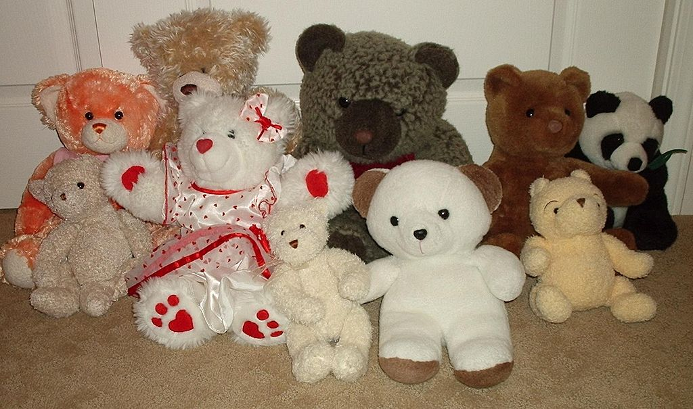

A teddy bear is a type of toy that looks like a bear. The teddy bear is normally a cub or baby bear.[1] In Russia, bears were used as children's toys for many years before they became popular in the United States.[1] The teddy bear in Russia has been the subject of folklore or stories for many years.[1] Teddy bears are often toys for children they are also used to comfort people and also to teach.
For more..!!! 